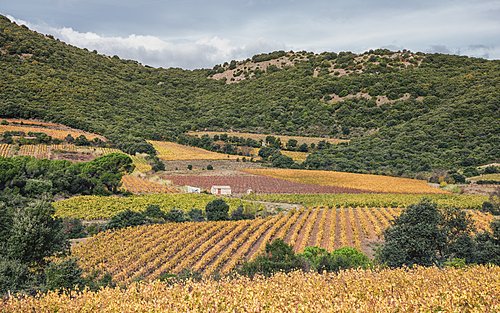
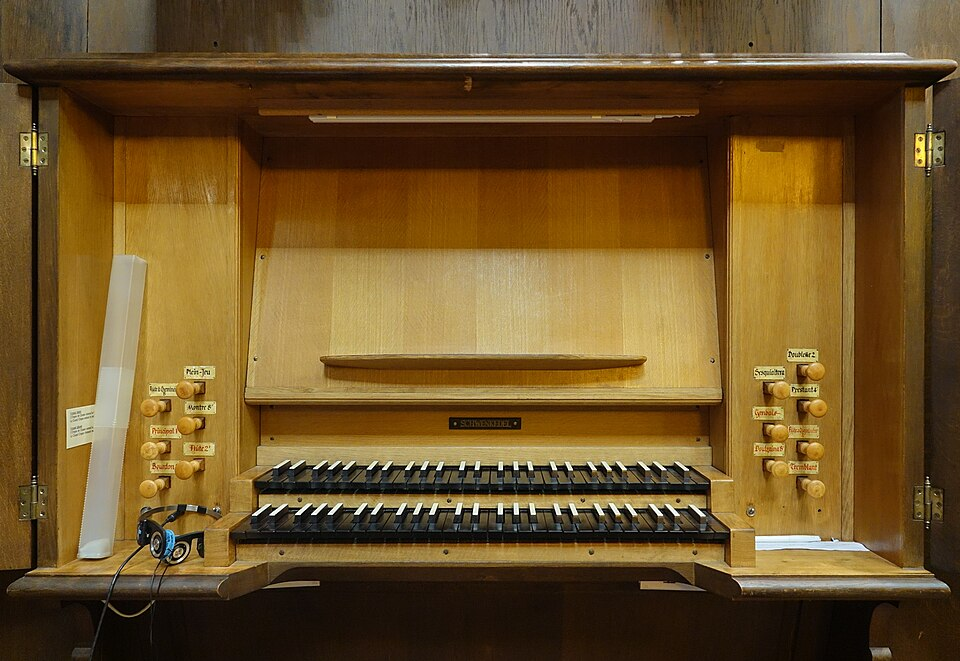
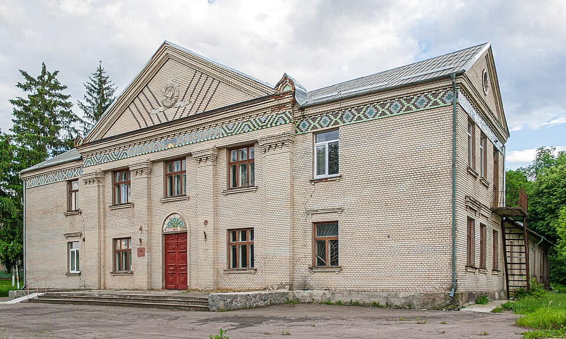
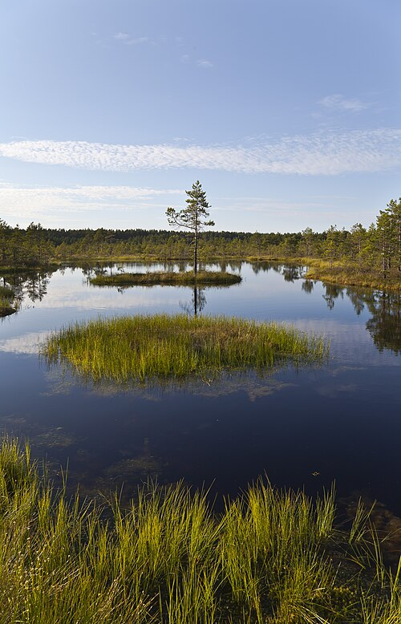
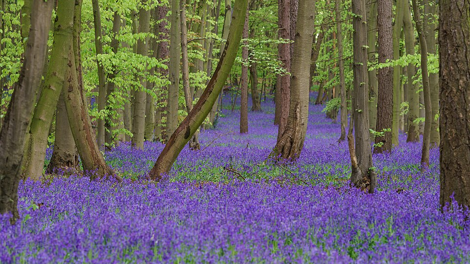

Cuadros famosos

Vineyards (AOC Languedoc-Cabrières) in autumn at the foot of the Pic
de Vissou.
Commune of Cabrières, Hérault, France.

Keyboard of pipe organ of choir in Saint-Martin church in Colmar
(Haut-Rhin, France).

House of Culture in the village of Lishchynivka, Ukraine

Viru bog, Lahemaa National Park, Estonia

Bluebells in Pryor's Wood, Stevenage.